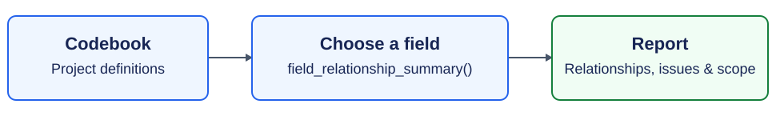

Exploring Field Relationships
Source:vignettes/articles/field-relationships.Rmd
field-relationships.Rmdfield_relationship_summary() identifies upstream
references and downstream uses of a field in available REDCap metadata.
It helps reviewers locate configuration to inspect before changing a
field. It does not modify a project, evaluate expressions, or predict
changes to stored values.
Build a codebook first
A field name alone cannot establish its relationships. A codebook supplies the field definitions, expressions, and instrument/event context needed to interpret references. Build it once to explore several fields without repeated API calls. Record data and credentials are not needed when using an existing codebook.
codebook <- build_codebook(
redcap_uri = Sys.getenv("REDCAP_URI"),
token = Sys.getenv("REDCAP_TOKEN")
)
relationships <- field_relationship_summary("weight_kg", codebook)Codebooks built before complete definitions were added must be rebuilt. Existing codebook viewing and saving still work with older objects.
Build or reuse a codebook, choose a field, then inspect the report or open its viewer:

Explore the bundled example
mock_codebook extends the mock project’s metadata with
weight/BMI examples. These extra fields are metadata only; the
record-based quality and dashboard fixtures do not contain them.
relationships <- field_relationship_summary("weight_kg", mock_codebook)
relationships
#> <REDCap field relationships>
#> Field: weight_kg (follow_up)
#> Upstream: 1 item
#> Downstream: 6 direct items, 1 indirect item
#> Reference occurrences across returned chains: 12
#> Action-tag condition: 1; Calculation: 1; Piping: 4; Field embedding: 1; Default value: 3; Unknown relationship type: 1; Branching logic: 1
#> Interpretation issues: 3 related metadata locations (see issues).
#> Project Coverage: project-wide metadata inspection; see coverage for sources and exclusions.
#> Indirect connections are reference chains, not predictions of value or behavior changes.
#> Project interpretation limits are summarized in coverage.
relationships$downstream |>
dplyr::select(item_name, connection, reference_chain, status_note)
#> # A tibble: 7 × 4
#> item_name connection reference_chain status_note
#> <chr> <chr> <chr> <chr>
#> 1 bmi direct weight_kg -[Calculation]-> bmi ""
#> 2 visit_summary direct weight_kg -[Piping]-> visit_summary ""
#> 3 starting_weight direct weight_kg -[Action-tag condition (… ""
#> 4 weight_at_entry direct weight_kg -[Default value (@DEFAUL… "Context d…
#> 5 diagnostic_example direct weight_kg -[Piping]-> diagnostic_e… ""
#> 6 custom_record_label direct weight_kg -[Piping]-> custom_recor… ""
#> 7 weight_review indirect weight_kg -[Calculation]-> bmi -[B… ""| Item | Relationship to weight_kg
|
|---|---|
baseline_weight_kg |
Upstream: the @DEFAULT action tag references weight
from the baseline event. |
bmi |
Direct downstream calculation using weight and height. |
weight_review |
Indirect downstream reference: its branching logic uses BMI. |
visit_summary |
Pipes and embeds weight in its field label, and pipes weight again in its field note. |
starting_weight |
References weight in an @IF condition and an
@DEFAULT value. |
weight_at_entry |
Uses a current-event smart variable in its default; interpretation requires event context. |
custom_record_label |
Project setting that pipes weight. |
diagnostic_example |
Clearly marked diagnostic example: contains ordinary piping, a
deliberately unsupported action tag, and a reference to missing
retired_weight. |
Use exact dictionary field names rather than field labels. For a
checkbox, supply its parent dictionary field name, such as
symptoms. Individual exported checkbox columns, such as
symptoms___fever, are not accepted. The report includes
references to the checkbox as a whole and to its individual choices; it
does not produce a separate relationship report for one choice.
Checkbox options in relationships
The bundled high_grade field (“High grade?”, Yes/No) has
branching logic [symptoms(fever)] = '1'. Selecting the
parent symptoms field finds that Fever-specific use:
checkbox <- field_relationship_summary("symptoms", mock_codebook)
checkbox$summary |>
dplyr::filter(dependent_name == "high_grade") |>
dplyr::select(dependent_name, reference_choice, reference_choice_label, expression, explanation)
#> # A tibble: 1 × 5
#> dependent_name reference_choice reference_choice_label expression explanation
#> <chr> <chr> <chr> <chr> <chr>
#> 1 high_grade fever Fever [symptoms(… high_grade…Summary describes this as “high_grade references [symptoms(fever)]
(Fever) in its branching logic.” The display retains the raw code
fever and adds its label Fever; numeric codes,
including leading zeros, are preserved. No equivalent relationship is
created for the other checkbox options unless metadata references
them.
In Summary and References:
-
Referenced choice identifies the option being used,
such as
[symptoms(fever)] (Fever). It is blank for whole-checkbox references such as[symptoms:checked], and for references without an individual checkbox option. -
Containing choice code identifies the choice label
that contains the expression. For example, if choice
1offollow_uphas the label"Details for [symptoms(fever)]", its containing choice code is1, while its referenced choice is[symptoms(fever)] (Fever). This column is blank when the reference is in branching logic or another non-choice-label location.
The R columns remain reference_choice (referenced raw
code), reference_choice_label (referenced label), and
choice_code (containing code). Unknown options retain their
raw reference with an interpretation note; a label is only added when
that option exists in the codebook.
Read upstream and downstream correctly
Upstream means fields referenced by the selected field. Downstream means fields or settings that reference it. A direct connection is one reference step; indirect connections follow several steps. Arrows point from the referenced field toward the referencing item. An upstream chain is displayed from the selected field back toward its inputs, with arrows pointing in the reverse direction.
Each chain labels its steps, for example:
weight_kg -[Calculation]-> bmi -[Branching logic]-> weight_review
A chain identifies configuration to review. It does not establish that values or behavior will change. Piping a value into a field label does not change that field’s stored value, and branching logic controls display rather than calculating an answer. Likewise, a default initializes a field; it does not establish ongoing synchronization with its source.
Traversal operates at field level. It does not establish a continuous
runtime path through particular events, arms, or repeating instances.
Each related item appears once, with one shortest reference chain; other
reference occurrences remain in references. These
connections are metadata references, not foreign keys, joins,
cardinalities, or guarantees of referential integrity.
Find the configuration to inspect
| R element / viewer section | Purpose |
|---|---|
field / Field |
Complete selected definition, annotations, and structural context. |
upstream / Upstream |
Inventory of fields used directly or indirectly, with labelled chains. |
downstream / Downstream |
Inventory of fields and settings that reference this field, with labelled chains. |
summary / Summary |
Human explanations grouped by item, metadata location, expression, and interpretation. |
references / References |
Individual occurrences with original expressions and reference tokens. |
issues / Interpretation issues |
Related interpretation limits with their location, expression, and reason. This viewer section appears when issues exist. |
coverage / Project Coverage |
Field-independent project source availability, all interpretation limits, and exclusions. |
relationships$summary |>
dplyr::select(dependent_name, metadata_column, expression, occurrence_count, explanation)
#> # A tibble: 12 × 5
#> dependent_name metadata_column expression occurrence_count explanation
#> <chr> <chr> <chr> <int> <chr>
#> 1 weight_kg field_annotation "@DEFAULT… 1 weight_kg …
#> 2 bmi select_choices_o… "[weight_… 1 bmi uses w…
#> 3 weight_review branching_logic "[bmi] > … 1 weight_rev…
#> 4 visit_summary field_label "Weight [… 1 visit_summ…
#> 5 visit_summary field_label "Weight [… 1 visit_summ…
#> 6 visit_summary field_note "Weight: … 1 visit_summ…
#> 7 starting_weight field_annotation "@IF([wei… 1 starting_w…
#> 8 starting_weight field_annotation "@IF([wei… 1 starting_w…
#> 9 weight_at_entry field_annotation "@DEFAULT… 1 weight_at_…
#> 10 diagnostic_example field_annotation "@UNKNOWN… 1 diagnostic…
#> 11 diagnostic_example field_label "Diagnost… 1 diagnostic…
#> 12 custom_record_label custom_record_la… "[record_… 1 custom_rec…Repeated references within an expression increase
occurrence_count; they do not create additional related
fields. References in different metadata locations or distinct
expressions remain separate Summary rows. Field labels and notes are
separate configuration to inspect, even when both pipe the same
value.
The viewer uses REDCap terms such as Branching logic, Piping, Field
embedding, and Default value (@DEFAULT). The R output
retains complete definitions and reference evidence when you need more
detail than the viewer displays.
view_field_relationship_summary(relationships)
save_field_relationship_summary(relationships, "weight-relationships.html")References initially shows every returned occurrence. Filters apply only when you choose them. Saved HTML includes local dependencies for offline use.
Interpret matching and issues
relationship describes the reference’s purpose.
action_tag retains a specific tag when present.
field_matched means the field name exists in the
dictionary. It does not validate the REDCap configuration.
resolution records qualifier/syntax interpretation:
-
resolved: the field and supported qualifiers were identified; the expression was not evaluated or fully validated. -
context_dependent: the field is known, but event or instance selection needs context, or an explicit instrument-event mapping is unavailable. -
unresolved: a field or qualifier could not be interpreted, or a checked configuration constraint failed. -
unclassified: candidate syntax or action-tag behavior is not interpreted.
Known field references remain linked even when qualifiers need interpretation. Unknown fields and unsupported annotation candidates do not create traversable links. They are retained as evidence and interpretation issues.
Interpretation note (status_note in R)
explains where human review is needed. A blank note means no
interpretation limit was detected; it does not validate the REDCap
configuration or establish that a proposed change is safe. The note’s
scope depends on the table:
| Table | What the note describes |
|---|---|
| References | One reference occurrence. |
| Summary | The grouped reference evidence for that row. |
| Upstream / Downstream | Combined limits along the displayed representative shortest reference chain, not every alternative path. |
Interpretation issues (issues) |
Issues at related metadata locations, including references outside the displayed chains. |
| Project Diagnostics | Issues at metadata locations anywhere in the project, independent of the selected field. |
Related issues are always available without requesting Project Diagnostics:
relationships$issues |>
dplyr::select(dependent_name, metadata_column, expression, status_note)
#> # A tibble: 3 × 4
#> dependent_name metadata_column expression status_note
#> <chr> <chr> <chr> <chr>
#> 1 diagnostic_example field_annotation @UNKNOWN='[weight_kg]' Unclassifi…
#> 2 weight_at_entry field_annotation @DEFAULT='[current-event-name… Context de…
#> 3 diagnostic_example field_note Deliberately missing field: [… Unresolved…For example, the missing retired_weight reference is in
a related field’s note, but is not part of a known reference chain to
weight_kg. Its evidence is in issues; adding
unrelated inputs to References would blur that table’s scope. Issues
describe interpretation limits, not a count of invalid REDCap
settings.
Review a proposed change
Start with direct upstream/downstream uses and inspect their Summary locations. Then review indirect chains and interpretation issues. Changing a name, a choice code, a label, or a value can have different consequences:
| Proposed change | Configuration to inspect |
|---|---|
| Rename or remove a field | References containing its field name, including calculations, branching logic, action tags, piping, and embedding. |
| Change codes or field type | Logic and calculations expecting the current representation; checkbox choice references and piping modifiers. |
| Change labels | Piping that displays labels, including choice labels, rather than raw values. |
| Change data values | Calculations and branching logic that read those values; default values need separate consideration of when they are applied. |
These are review prompts, not predictions. The package does not establish whether stored calculations have been recalculated, whether conditions will be true for particular records, or whether a change is safe to deploy.
Understand inspection scope
Project Coverage is identical for every field summarized from the same codebook. It describes the entire project’s inspection scope, not relationships for the selected field. Source rows group available locations, nonblank expressions, and reference occurrences by metadata source. All project interpretation limits are disclosed in aggregate, including locations also represented in Issues.
Issues retains the field-specific details: which related metadata locations need interpretation, their original expressions, and the reasons. A location can appear in Issues and contribute to the Project Coverage counts. These are two views of the same information, so their counts should not be added together.
The project-wide interpretation notice reads:
Some project metadata could not be fully interpreted. Relationship reports may therefore omit references. Request Project Diagnostics to inspect those locations.
This is a completeness caveat, not confirmation of an additional relationship.
Supported sources include branching logic, calculated fields, field
annotations, field labels and notes, section headers, choice labels, and
the custom record label. Supported action-tag interpretation includes
@DEFAULT, @CALCTEXT, @CALCDATE,
and conditions and recognized branches within @IF. Quoted
ordinary formula literals are ignored. Ambiguous quoted references in
calculation action tags are conservatively unclassified.
The extractor recognizes explicit events and numeric instances,
common dynamic event/instance selectors, checkbox choices, and piping
modifiers including :checked:value and
:unchecked:value. It flags cross-instrument embedding, but
does not validate every embedding, instrument-page, action-tag, or
expression constraint. REDCap versions can support syntax outside this
parser’s scope.
Alerts, automated survey invitations, survey queues, report filters, data quality rules, external modules/scripts, and other settings outside retained metadata are not inspected. An empty result does not establish the absence of external uses.
Inspect project-wide interpretation issues
Project Diagnostics explains interpretation limits across the entire
project, including metadata unrelated to the selected field. Request it
with include_diagnostics = TRUE:
project_review <- field_relationship_summary("age", mock_codebook, include_diagnostics = TRUE)
project_review$diagnostics |>
dplyr::select(dependent_name, metadata_column, expression, status_note)
#> # A tibble: 3 × 4
#> dependent_name metadata_column expression status_note
#> <chr> <chr> <chr> <chr>
#> 1 diagnostic_example field_annotation @UNKNOWN='[weight_kg]' Unclassifi…
#> 2 weight_at_entry field_annotation @DEFAULT='[current-event-name… Context de…
#> 3 diagnostic_example field_note Deliberately missing field: [… Unresolved…For age, Issues is empty, but Project Diagnostics
includes interpretation issues in the weight-related examples elsewhere
in the project. Project Diagnostics is identical for every field
summarized from the same codebook. It groups issue evidence by metadata
location and interpretation status, rather than listing blank or
successfully inspected locations. Source availability remains in Project
Coverage.
This adds diagnostics to the R report and a
Project Diagnostics section to the viewer and saved
HTML. The project-wide issue details do not change the selected field’s
Issues or Project Coverage. These are interpretation limits, not a list
of confirmed REDCap configuration errors.
Request the full inspection log only for troubleshooting
The full inspection log includes every retained source location,
including blank, unavailable, and inspected locations, plus reference
diagnostics and exclusions. It can be large. Request it separately with
include_inspection_log = TRUE:
inspection <- field_relationship_summary("age", mock_codebook, include_inspection_log = TRUE)
inspection$inspection_log |>
dplyr::count(row_kind, status)
#> # A tibble: 8 × 3
#> row_kind status n
#> <chr> <chr> <int>
#> 1 reference context_dependent 1
#> 2 reference unclassified 1
#> 3 reference unresolved 1
#> 4 scope not_inspected 4
#> 5 source blank 75
#> 6 source inspected 41
#> 7 source not_inspected 7
#> 8 source unclassified 1This adds inspection_log and a Full Inspection
Log viewer section. The two flags are independent; set both to
TRUE to include both sections. They expose different levels
of detail from the same inspection and do not enable additional analysis
or API calls. Both optional tables are omitted by default.